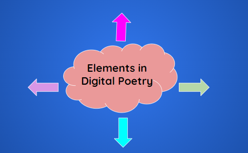

This video by Leonardo Flores is all about Digital Poetry. Pay particular attention to various forms/elements of this poetry type.
|
Answer the following questions: 1. Digital Poetry is also known as_______ 2. From what form of literature does digital poetry belong? 3. What electronic device or equipment is mainly used in digital poetry to display and interact with the work? 4. What are the different forms of Digital Poetry? 5. What are the different elements in Digital Poetry? Using a mind map, identify the elements of digital poetry. |

Watch, read and study the given examples of digital poetry.